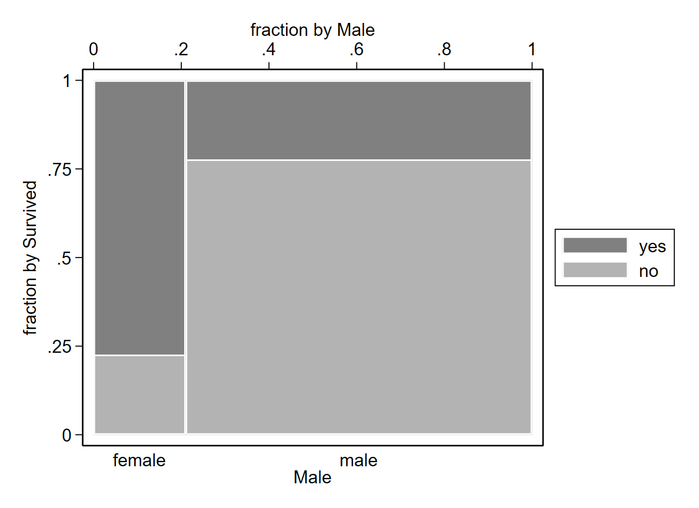

Chapter 6 Logistische Regression
- Mit einer logistischen Regression schätzt Du den Effekt einer metrischen Variable (oder einer Dummy Variable) auf ein binäres Outcome
- Unser Beispiel: Hat das Geschlecht einen Effekt, ob eine Person das Titanic Unglück überlebt hat?
Mit dem Titanic Datensatz wird im folgenden die Grundbefehle einer logistischen Regression in Stata gezeigt:
use "https://www.stata-press.com/data/r16/titanic800", clear
desRunning C:\Users\gu99mywo\Dropbox\Lehre\NotShared_FAU\EMS\Stata_Paste_BD\pro> e.do ...
(Titanic passenger survival (Extract))
Contains data from https://www.stata-press.com/data/r16/titanic800.dta
obs: 800 Titanic passenger survival
(Extract)
vars: 4 22 Feb 2019 13:24
(_dta has notes)
-------------------------------------------------------------------------------
storage display value
variable name type format label variable label
-------------------------------------------------------------------------------
class byte %9.0g class Class
adult byte %9.0g age Adult
male byte %9.0g sex Male
survived byte %9.0g survived Survived
-------------------------------------------------------------------------------
Sorted by: Wir schätzen den Effekt des Geschlechts (male) auf die Überlebenchance (survived) einer Person. Neben einer einfachen Kreuztabelle zeigt beispielsweise auch ein spineplot welcher Anteil an Männern und Frauen den Titanic Unfall (nicht) überlebt hat.
*spineplot ist im ado tabplot und muss installiert werden
spineplot survived male // Splineplot 
Mehr als drei Viertel der weiblichen Passagiere hat die Titanic überlebt; währrend ein deutlich größerer Anteil der männlichen Passagiere das Titanic Unglück nicht überlebt hat. Wie viel größer ist das Risiko (bzw. Chancenverhältnis) von Männern gegenüber Frauen? Let’s run a logistic regression to find an answer to this question.
6.1 logit
- Mit dem logit Befehl werden in Stata die logarithmierten Chancen berechnet. Dies ist schwierig zu interpretieren
- Wir können zumindest die Vorzeichen und die Signifikanz interpretieren
logit survived maleRunning C:\Users\gu99mywo\Dropbox\Lehre\NotShared_FAU\EMS\Stata_Paste_BD\pro> e.do ...
Iteration 0: log likelihood = -512.1623
Iteration 1: log likelihood = -425.53116
Iteration 2: log likelihood = -425.28715
Iteration 3: log likelihood = -425.28708
Iteration 4: log likelihood = -425.28708
Logistic regression Number of obs = 800
LR chi2(1) = 173.75
Prob > chi2 = 0.0000
Log likelihood = -425.28708 Pseudo R2 = 0.1696
------------------------------------------------------------------------------
survived | Coef. Std. Err. z P>|z| [95% Conf. Interval]
-------------+----------------------------------------------------------------
male | -2.477633 .2076944 -11.93 0.000 -2.884706 -2.070559
_cons | 1.229948 .1844128 6.67 0.000 .8685058 1.591391
------------------------------------------------------------------------------Interpretation: Männer haben im Durchschnitt einen 2.477 geringere Log-Odds als Frauen. Der Effekt ist signifikant.
6.2 or
- Etwas leichter ist die Interpretation eines Odds Ratios (OR) - das Chancenverhältnis
- Hierfür müssen wir die Exponentialfunktion anwenden
di exp(_b[male]) Running C:\Users\gu99mywo\Dropbox\Lehre\NotShared_FAU\EMS\Stata_Paste_BD\pro> e.do ...
.08394172- In Stata erhällt man den OR mit der Option or:
logit survived male, orRunning C:\Users\gu99mywo\Dropbox\Lehre\NotShared_FAU\EMS\Stata_Paste_BD\pro> e.do ...
Iteration 0: log likelihood = -512.1623
Iteration 1: log likelihood = -425.53116
Iteration 2: log likelihood = -425.28715
Iteration 3: log likelihood = -425.28708
Iteration 4: log likelihood = -425.28708
Logistic regression Number of obs = 800
LR chi2(1) = 173.75
Prob > chi2 = 0.0000
Log likelihood = -425.28708 Pseudo R2 = 0.1696
------------------------------------------------------------------------------
survived | Odds Ratio Std. Err. z P>|z| [95% Conf. Interval]
-------------+----------------------------------------------------------------
male | .0839417 .0174342 -11.93 0.000 .0558712 .1261153
_cons | 3.421053 .630886 6.67 0.000 2.383347 4.910574
------------------------------------------------------------------------------
Note: _cons estimates baseline odds.Interpretation: Männer haben im Vergleich zu Frauen durchschnittlich eine um den Faktor .083 geringe Chance die Titanic zu überleben. Der Effekt ist statistisch signifikant.
6.3 OR per Kreutabelle berechnen
- Was der OR wirklich inhaltlich aussagt, lässt sich ganz gut nachvollziehen, wenn wir den OR auf Basis einer Kreuztabelle ausrechnem
*Odds Ratio per Hand ausrechnen
tab2 survived maleRunning C:\Users\gu99mywo\Dropbox\Lehre\NotShared_FAU\EMS\Stata_Paste_BD\pro> e.do ...
-> tabulation of survived by male
| Male
Survived | female male | Total
-----------+----------------------+----------
no | 38 491 | 529
yes | 130 141 | 271
-----------+----------------------+----------
Total | 168 632 | 800 - Bei den Männer haben 141 überlebt, 491 aber nicht. Wenn wir diese zwei Zahlen ins Verhältnis zueinander setzen, erhalten wir die Odds. Die Odds zu Überleben von Männer ist 141/491.
- Analog müssen wir das gleiche für die Frauen im Datensatz machen.
- Zum Glück können wir Stata als Taschenrechner mit display nutzen!
*Odds der Männer
display 141/491
*Odds der Frauen
display 130/38Running C:\Users\gu99mywo\Dropbox\Lehre\NotShared_FAU\EMS\Stata_Paste_BD\pro> e.do ...
.28716904
3.4210526- Und nun der OR, also das Chancenverhältnis der Männer gegenüber den Frauen die Titanic zu überleben. Wir teilen also die Odds der Männer durch den Wert der Frauen:
*OR
display .28716904/3.4210526Running C:\Users\gu99mywo\Dropbox\Lehre\NotShared_FAU\EMS\Stata_Paste_BD\pro> e.do ...
.08394172Und kommen so zum gleichen Ergebnis wie die logistische Regression.
6.4 margins
- Die Ergebnisse einer logistischen Regression sind NICHT als Wahrscheinlichkeit interpretierbar, jedoch können wir Wahrscheinlichkeiten berechnen mit Hilfe des margins Befehls
- Marginaleffekte am Mittelwertsvektor (Befehl: margins, dydx(*) atmeans)
- Oder: Average Marginal Effects
quietly logit survived male
margins, dydx(*) continuousRunning C:\Users\gu99mywo\Dropbox\Lehre\NotShared_FAU\EMS\Stata_Paste_BD\pro> e.do ...
Average marginal effects Number of obs = 800
Model VCE : OIM
Expression : Pr(survived), predict()
dy/dx w.r.t. : male
------------------------------------------------------------------------------
| Delta-method
| dy/dx Std. Err. z P>|z| [95% Conf. Interval]
-------------+----------------------------------------------------------------
male | -.430326 .0228731 -18.81 0.000 -.4751565 -.3854955
------------------------------------------------------------------------------Interpretation: Männer haben durchschnittliche eine 43 Prozentpunkte geringere Wahrscheinlichkeit die Titanic zu überleben.
6.5 lrtest
- LR Test dient zu Modellvergleiche
- Die Nullhypothese besagt, dass sich die Likelihoods von Modell 1 und Modell 2 nicht unterscheiden.
quietly logit survived male
est store m1
quietly logit survived male adult
est store m2
lrtest m1 m2Running C:\Users\gu99mywo\Dropbox\Lehre\NotShared_FAU\EMS\Stata_Paste_BD\pro> e.do ...
Likelihood-ratio test LR chi2(1) = 2.20
(Assumption: m1 nested in m2) Prob > chi2 = 0.1381- Der p-Wert zeigt, dass es keinen signifikanten Unterschied in der Erklärungskraft von Modell 1 und 2 gibt.
6.6 fitstat
- fitstat gibt eine Variation an Gütemaße aus (fitstat ist ein Ado und muss installiert werden)
- McFaddens Pseudo-R-Quadrat: Keine analoge Interpretation wie R², aber höhere Werte deuten auf ein besseres Modell hin
- AIC und BIC: Kleinere Werte deuten auf ein besseres Modell hin
- Wir können fitstat direkt nach der Regression rufen oder der Beispielout zeigt, wie wir zuerst die Gütemaße für Model 1 berechnen, diese speichern und mit den Gütemaßen von Modell 2 vergleichen (fitstat, using(m1))
quietly logit survived male
quietly fitstat, saving(m1)
quietly logit survived male adult
fitstat, using(m1)Running C:\Users\gu99mywo\Dropbox\Lehre\NotShared_FAU\EMS\Stata_Paste_BD\pro> e.do ...
Measures of Fit for logit of survived
Current Saved Difference
Model: logit logit
N: 800 800 0
Log-Lik Intercept Only: -512.162 -512.162 0.000
Log-Lik Full Model: -424.187 -425.287 1.100
D: 848.375(797) 850.574(798) -2.200(-1)
LR: 175.950(2) 173.750(1) 2.200(1)
Prob > LR: 0.000 0.000 0.000
McFadden's R2: 0.172 0.170 0.002
McFadden's Adj R2: 0.166 0.166 0.000
Maximum Likelihood R2: 0.197 0.195 0.002
Cragg & Uhler's R2: 0.273 0.270 0.003
McKelvey and Zavoina's R2: 0.241 0.237 0.004
Efron's R2: 0.228 0.225 0.003
Variance of y*: 4.333 4.310 0.023
Variance of error: 3.290 3.290 0.000
Count R2: 0.776 0.776 0.000
Adj Count R2: 0.339 0.339 0.000
AIC: 1.068 1.068 -0.000
AIC*n: 854.375 854.574 -0.200
BIC: -4479.261 -4483.746 4.485
BIC': -162.581 -167.066 4.485
Difference of 4.485 in BIC' provides positive support for saved model.Hier scheint auch das Model 1 minimal besser an die Daten angepasst zu sein, da zumindest das BIC kleiner ausfällt.
6.7 classification
- Anhand einer Klassifikationstabelle, kann die korrekte Vorhersage, die Sensitivität und die Spezifität abgelesen werden.
estat classificationRunning C:\Users\gu99mywo\Dropbox\Lehre\NotShared_FAU\EMS\Stata_Paste_BD\pro> e.do ...
Logistic model for survived
-------- True --------
Classified | D ~D | Total
-----------+--------------------------+-----------
+ | 130 38 | 168
- | 141 491 | 632
-----------+--------------------------+-----------
Total | 271 529 | 800
Classified + if predicted Pr(D) >= .5
True D defined as survived != 0
--------------------------------------------------
Sensitivity Pr( +| D) 47.97%
Specificity Pr( -|~D) 92.82%
Positive predictive value Pr( D| +) 77.38%
Negative predictive value Pr(~D| -) 77.69%
--------------------------------------------------
False + rate for true ~D Pr( +|~D) 7.18%
False - rate for true D Pr( -| D) 52.03%
False + rate for classified + Pr(~D| +) 22.62%
False - rate for classified - Pr( D| -) 22.31%
--------------------------------------------------
Correctly classified 77.63%
--------------------------------------------------Interpretation: In unserem Fall wurden 77.63% der Fälle richtig klassifiziert. Die Sensitiviät liegt bei 47.97%, d.h. 47.97% der Personen die als überlebend identifiziert wurden, haben auch tatsächlich überlebt. Und die Spezifität: 92.82% der Personen die als nicht-überlebend identifiziert wurden, haben auch tatsächlich nicht überlebt.